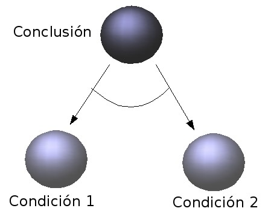

Algunas personas son proactivas. Les gusta planificar por adelantado, prever obstáculos y llevar una vida ordenada. Otra gente es reactiva. Les gusta permanecer abiertos a lo que ocurre alrededor, aprovechar nuevas oportunidades y ser espontáneos. La mayoría de las personas son tanto proactivos como reactivos, en momentos diferentes y en varios niveles.
En este capítulo, veremos cómo el pensamiento proactivo puede ser modelado usando la lógica para razonar acerca del mundo y para reducir metas a sub-metas. En el siguiente capítulo, veremos cómo el pensamiento reactivo puede ser modelado con reglas de condición-acción. Y, en el capítulo subsiguiente, cómo los dos tipos de pensamiento se pueden combinar reformulando las reglas de condición-acción en forma lógica.
Es muy probable que el lector conozca la antigua fábula Griega, atribuida a Esopo, según la cúal una zorra proactiva engaña a un cuervo reactivo. El cuento comienza, inocentemente, con un cuervo descansando en la rama de un árbol y sosteniendo un queso en su boca. Aparece entonces la zorra, que quiere comerse el queso.
|
|
|
En esta versión de la historia, veremos el cuento desde el punto de vista de la zorra. Para modelar su forma proactiva de pensar, representaremos sus creencias y sus metas en forma lógica.
Meta: Yo tengo el queso.
Creencias:
El cuervo tiene el queso.
Un animal tiene un objeto
si el animal está cerca del objeto
y el animal toma el objeto.
Yo estoy cerca del queso
si el cuervo tiene el queso
y el cuervo canta.
El cuervo canta si Yo alabo al cuervo.
Como pueden ver, la zorra no sólo es una lógica, sino también una física. En particular, la creencia acerca de su proximidad al queso cuandoquiera que el cuervo cante combina una declaración simple sobre su ubicación con el conocimiento de las leyes de la gravedad.
La zorra sabe que si el cuervo canta, tendrá que abrir su pico y entonces el queso caerá a tierra junto al árbol. La zorra también sabe que, puesto que ella está junto al árbol, estará entonces cerca del queso. De esta forma, la zorra sabe que estará cerca del queso si el cuervo canta.
La zorra también es una psicóloga conductista. Como conductista, está únicamente interesada en la conducta externa, de entrada-salida, del cuervo y no en los mecanismos internos al cuervo que podrían estar causando su conducta. De hecho, aunque ella representa sus propias creencias acerca del cuervo en términos lógicos, no asume que el cuervo usa lógica para representar sus creencias acerca del mundo. Por lo que concierne a la zorra, la conducta del cuervo bien podría ser generada por medio de reglas de condición-acción sin forma lógica. O, quizás, podrían estar “cableadas” directamente en su cuerpo, sin ni siquiera pasar por su cerebro.
Justo como vimos con las creencias de la zorra acerca de su proximidad al queso si el cuervo cantaba, las creencias de la zorra acerca de la conducta del cuervo bien podrían derivarse de otras creencias suyas – Quizás a partir de unas creencias más generales acerca del cómo un agente reactivo e ingenuo responde a las alabanzas, sin pensar en las posibles consecuencias de sus acciones.
La zorra, además, está dotada con el ordinario sentido común. Sabe que un animal tendrá un objeto si está cerca del objeto y lo recoge (lo toma). Sabe la zorra que esta es una ley general, que se aplica universalmente a cualquier animal y a cualquier objeto (aunque pareciera no entender que la ley también se aplica a los robots, a menos que crea que los robots son una especie de animal). Sabe también, la zorra, suficiente lógica como para instanciar la ley general y aplicarla al caso particular en el que la zorra es el animal y el queso el objeto.
Las creencias de la zorra, no sólo tienen forma lógica, sino que también tienen la forma de un programa lógico. Como vimos antes, un programa lógico es una colección de implicaciones con la forma:
Conclusión si Condiciones.
Tanto la conclusión como las condiciones se escriben en forma declarativa.
Las implicaciones se escriben hacia atrás, la conclusión primero, para indicar se pueden usar para razonar hacia atrás, de las conclusiones a las condiciones. Como consecuencia de razonar hacia atrás, cada implicación se comporta como un procedimiento reductor de metas[1]:
Para derivar la Conclusión, derive las Condiciones.
Aún los “hechos”, que registran observaciones, tales como la creencia de que el cuervo tiene el queso, pueden ser considerados como implaciones que tienen una conclusión, pero no tienen condiciones:
Conclusión si nada.
Estos hechos también se comportan como procedimientos:
Para derivar la Conclusión, [no] haga nada.
(N.T. El [no] lo usamos para acomodar la oración al Español, en el que usamos la doble negación en forma opuesta al sentido formal en Lógica).
Por lo tanto, las creencias de la zorra pueden ser usadas como una colección de procedimientos:
Para [ob]tener un objeto,
esté (ubíquese) cerca del objeto
y tome el objeto.
Para estar cerca el queso,
verifique que el cuervo tiene el queso
y haga que el cuervo cante.
Para hacer que el cuervo cante,
alabe al cuervo.
Para verificar que el cuervo tiene el queso,
[no] haga nada.
Estos procedimientos pueden ser aplicados, uno después del otro, para reducir la meta superior:
Yo tengo el queso.
a las sub-metas con las dos acciones:
Yo alabo al cuervo y Yo tomo el queso.
Juntas, estas dos acciones constituyen un plan para alcanzar la meta original.
La reducción que hace la zorra trocando su meta original en las dos acciones sub-metas, puede ser representada con la ayuda de un grafo en el cual las implicaciones con la forma:
Conclusión if Condición1 and Condición2
son representadas por sub-grafos con la forma siguiente:

El grafo tiene la forma de un árbol al revés, con la meta superior en la llamada raíz del árbol (que está al tope de la figura):
Para que la zorra pueda resolver la meta superior es suficiente si “crece” (hace crecer) el árbol, comenzando desde la raíz, reduciendo metas a sub-metas hasta que no es posible reducir más. Si todas las metas en las “hojas” del árbol son acciones irreductibles, entonces estas acciones constituyen un plan para resolver la meta superior.
La operación de resolver una meta a una sub-meta pueder también ser vista, en términos lógicos, como razonamiento hacia atrás con una implicación, apareando la meta con la conclusión de la implicación y derivando las condiciones de la implicación como sub-metas.
Por ejemplo, la meta superior:
Yo tengo el queso.
se aparea con la conclusión de la implicación general:
Un animal tiene un objeto
si el animal está cerca del objeto
y el animal toma el objeto.
Razonando hacia atrás podemos obtener las dos sub-metas:
Yo estoy cerca del queso y Yo tomo el queso.
reemplazando por los términos específicos “Yo” y “el queso”, los más generales “el animal” y “el objeto” respectivamente (N.T. Noten que en Español tenemos que lidiar con algunos otros ajustes morfológicos, como la conjugación verbal. Así, en el apareo anterior, el “toma” se convierte en “tomo” y el “está” en “estoy”).
La segunda de estas dos sub-metas es una acción que no corresponde con la conclusión de ninguna implicación. Sólo puede ser resuelta si se le ejecuta exitósamente. La primera sub-meta, por su parte, puede ser reducida a otras sub-metas con tres pasos más de razonamiento hacia atrás.
El resultado final de esta cadena de razonamiento hacia atrás es una prueba lógica de que la zorra tiene el queso si alaba al cuervo y toma el queso. La prueba tiene la misma estructura de árbol que el grafo de reducción de metas que vimos antes.
En lógica tradicional, es más común mostrar las pruebas en la dirección hacia adelante. En este caso, la prueba tradicional sería algo como esto:
Yo alabo el cuervo.
Por lo tanto, El cuervo canta.
El cuervo tiene el queso.
Por lo tanto, Yo estoy cerca del queso.
Yo tomo el queso.
Por lo tanto, Yo tengo el queso.
Para un fundamentalista de la lógica, este sería el fin del cuento. No hay diferencia entre el mundo de la zorra y sus creencias sobre ese mundo, y no hay diferencia entre el plan de la zorra para obtener el queso y el que ya lo tenga.
Sin embargo, el sentido común nos dice que hay más en la vida que el sólo pensar – y, quizás, más en el pensar que la mera lógica. Además de pensar, un agente inteligente necesita observar los cambios en el mundo y, quizás como respuesta, actuar para cambiarlo. Y podría haber otras maneras de pensar – maneras que no usen la lógica e incluso quizás maneras que no usan ninguna representación mental del mundo.
Regresaremos a esta historia y a la discusión de estos temas en los siguientes capítulos. Pero antes:
Se supone que la fábula de Esopo tiene un propósito – Una lección que nos dice que no es bueno confiar en las palabras y en las acciones de otro agente, sin antes tratar de entender sus metas e intenciones. O, puesto aún más simple, que antes de hacer algo, debes pensar acerca de sus posibles consecuencias.
El cuervo en el cuento responde a las alabanzas de la zorra espontáneamente – sin pensar, se podría decir. Un cuervo más inteligente reflexionaría sobre las acciones que pretende, antes de realizarlas, para establecer si acaso pudieran tener consecuencias no previstas o no deseables.
Si tan sólo el cuervo supiera lo que sabe la zorra, podría razonar como sigue:
Yo quiero cantar.
Pero si canto, la zorra se acercará (estará cerca) del queso.
Si la zorra está cerca del queso y lo toma (al queso),
entonces la zorra tendrá el queso.
Quizás la zorra quiere el queso y, entonces, lo tomaría.
Pero si la zorra toma el queso, yo no tendré (más) el queso.
Así que, puesto que Yo quiero el queso, Yo no canto.
(N.T. En Español, la variedad de los tiempos y conjugaciones verbales es mayor y perturba el aparear de los términos y de los verbos al razonar).
Note que esta línea de razonamiento que traza el cuervo usa varias creencias que tiene también la zorra, pero los usa hacia adelante, no hacia atrás como en aquel caso. Investigaremos este uso dual de las creencias para razonar hacia adelante o hacia atrás, dentro de dos capítulos.
Entretanto, note que, aunque el usar la lógica podría no ser siempre la forma más natural de pensar, podría ayudarnos (y también al cuervo) algunas veces a pensar y comportarnos con más efectividad.
La visión de la lógica en la mente de un agente inteligente, como hemos visto en este capítulo, es algo así:
Esa visión será enriquecida mucho más en los siguiente capítulos .
[1] En Español, hay una transformación morfológica considerable al pasar del procedimiento a la forma declarativa. Los procedimientos, por ejemplo, se suelen plantear con el verbo en infinitivo. En la forma declarativa este se usa muy poco.
Kowalski. R.A. Lógica Computacional y el Pensamiento Humano (Traducido por Jacinto Dávila) 2011-2018